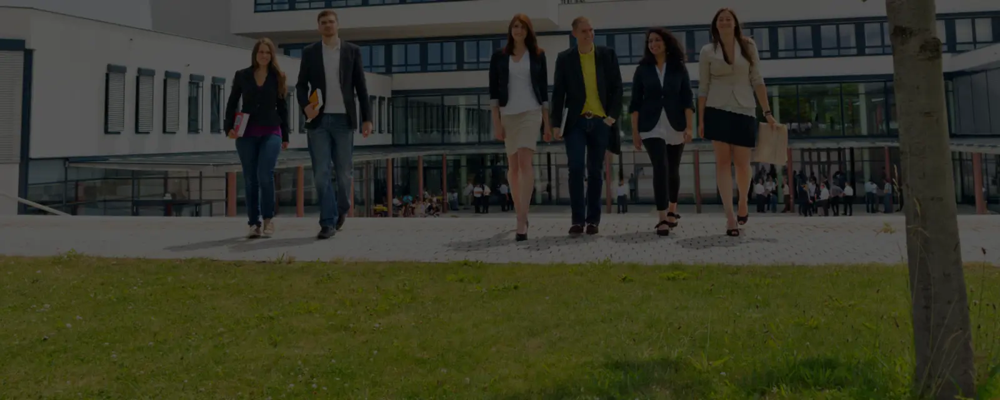
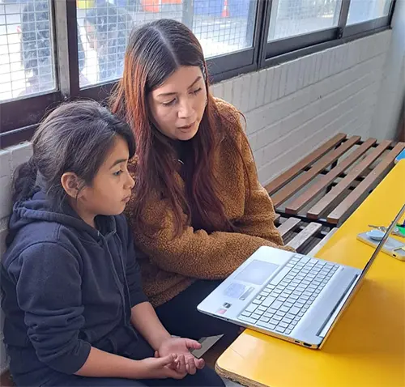
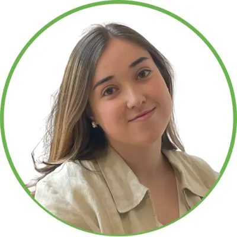

10 h
Formación teórica
Introducción a las dificultades de aprendizaje y fundamentos de la intervención psicoeducativa.

En Avesedari ofrecemos plazas de prácticas para estudiantes de Psicología o Pedagogía que deseen formar parte del Plan de Aprendizaje Lector y Lingüístico.
Una experiencia formativa en contexto real en que combinamos teoría y práctica:
10 h
Introducción a las dificultades de aprendizaje y fundamentos de la intervención psicoeducativa.
290 h
Las prácticas se llevan a cabo cuatro días a la semana, en horario de mañana (en escuelas) o de tarde (en entidades SIS), según preferencia y disponibilidad.

Buscamos estudiantes comprometidos y con interés por:
IE Baldomer Solà, Escuela Josep Carner, Escuela Baldiri Reixac y Escuela Cultural de Llefià.
Casal dels Infants La Betsaida, Casal dels Infants Sant Roc, Fundació Salut Alta y La Rotllana.
Avesedari colabora con universidades y escuelas tanto públicas como privadas en distintas partes de España y LATAM.
PENDIENTE Confirmar los convenios vigentes.

“El periodo de prácticas fue una experiencia en la que aprendí cómo es la figura esencial de psicólogo de la educación, ya sea mediante una intervención concreta, como fue el caso de la lectura, o como apoyo en el aula. Estoy convencida de que aplicaré todos estos conocimientos que adquirí en Avesedari en mi futuro profesional, y de que me serán útiles tanto para un primer acercamiento práctico como para mejorar en futuras situaciones como psicóloga de la educación. El profesorado de la escuela y el equipo de Avesedari estuvieron siempre dispuestos a ayudarme y a enseñarme, dándome confianza e independencia para mejorar mis habilidades. Y los alumnos, quienes fueron los protagonistas de estas prácticas, hicieron que la experiencia fuera inolvidable.”
Hacer las prácticas curriculares en Avesedari ha sido una experiencia muy enriquecedora, tanto profesional como personalmente. He podido poner en práctica los conocimientos adquiridos durante la formación, al tiempo que aprendía nuevas herramientas de intervención, como el método Glifing, un apoyo en la adquisición de la lectura. Ha sido una etapa que me ha permitido trabajar en una escuela situada en un contexto socioeducativo complejo, una experiencia que me ha aportado grandes aprendizajes tanto en el ámbito educativo como personal.
Mi experiencia de prácticas con la asociación Avesedari ha sido muy provechosa y formativa. He disfrutado muchísimo del día a día con los niños y niñas en la escuela, y tengo que reconocer que me lo he pasado muy bien viendo cómo se motivaban y mejoraban la lectura sesión tras sesión. Ha sido un gran reto, pero me llevo un montón de aprendizajes prácticos y una experiencia superformadora para mi futuro profesional. ¡Muy feliz de todo lo que he aprendido en esta etapa!
Mis prácticas en Avesedari han sido una experiencia muy enriquecedora tanto en el ámbito personal como profesional. Me han permitido conocer de cerca la intervención educativa y entender mejor la importancia de adaptarse a las necesidades de cada alumno. A lo largo de este proceso, he podido desarrollar habilidades como la empatía, la paciencia y la capacidad de adaptación, así como ganar seguridad en la gestión de las sesiones psicopedagógicas. En general, hago una valoración muy positiva, puesto que ha sido una etapa de aprendizaje continuo que me ha ayudado a crecer y a reafirmar mi interés por el ámbito educativo.
En lo que respecta a mi experiencia de prácticas durante este semestre, hago una valoración muy positiva. Ha sido una etapa muy fructífera tanto en el ámbito profesional como personal, sobre todo por el hecho de haber podido trabajar directamente con niños y conocer de cerca el funcionamiento de un contexto escolar real y de alta complejidad como el Institut Escola Baldomer Solà. Me llevo especialmente el vínculo que he podido crear con los niños y todo lo que he aprendido mientras los acompañaba. También me ha servido para formarme en una herramienta que desconocía, como es Glifing, y para entender mejor la importancia de adaptar la intervención a las necesidades de cada niño. Personalmente, creo que las prácticas me han ayudado mucho a desarrollar la capacidad de adaptación, la autonomía, la organización y la gestión de los imprevistos. También he aprendido a dar más importancia a las emociones de los niños y a mis propias emociones durante la intervención. Como aspecto a mejorar, quizás me habría gustado poder profundizar algo más en la parte práctica antes de iniciar las sesiones, para llegar con más seguridad al primer contacto con la plataforma y con los niños. Aun así, considero que esta experiencia me ha aportado muchos aprendizajes y ha reforzado mi interés por seguir trabajando con niños, especialmente en contextos vulnerables. Muchas gracias por el acompañamiento durante este proceso.
Puedes contactar con el equipo de Avesedari para conocer todos los detalles e iniciar el proceso de colaboración con tu universidad.
Escribir a AvesedariPENDIENTE El correo de la web (neust10.sg-host.com) es de un dominio técnico. Confirmar el bueno.